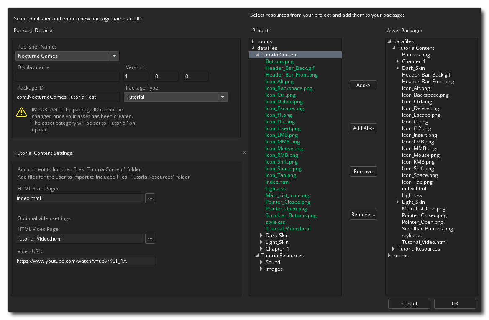

市场（Marketplace） 是 YoYo Games 在线购买和出售资产包（package）的市场。 资产包可以是与 GameMaker Studio 2 相关的任何内容，即：精灵、脚本、着色器，甚至是完整的游戏引擎或框架。 为了能够创建、购买和销售资产包，你必须首先在市场上作为发布者注册并通过 GameMaker Studio 2 登录（这将在你登录该程序时自动登录）或从 Marketplace 主页登录。 你可以从 YoYo Games 知识库 市场 - 设置发布者帐户 文章中找到有关如何成为发布者的完整详细信息。
在此窗口中，你可以从页面右上角访问你的用户帐户（以及它链接的发布者帐户），你还可以浏览和购买或下载资产包以供使用。你可以从 YoYo 游戏帮助中心 市场 - 购买资产包 文章中找到有关如何购买和下载资产包的完整信息。
你可以从 GameMaker Studio 2 IDE 顶部的下拉 市场 菜单轻松访问市场，它可以让你打开资产包库以及创建自己的（资产或教程）并更新现有资产包。下面将详细介绍这些想法：
库 窗口显示你已购买的资产包，并为你提供下载和将其添加到项目中的选项。
左侧是不同的类别过滤器，你可以使用这些过滤器查看每个过滤器中的内容，然后在中间列出库中的资产列表。可以选择其中每一项查看它的功能概述（在右侧），并且它们都具有在项目中查看、下载或安装资产包的图标。请注意，主窗口顶部还有两个额外的过滤器，你可以选择 仅 查看专门为 GameMaker Studio 2 创建的资产，以及仅显示已下载到你电脑上资产包。你还可以通过单击 刷新 按钮随时刷新显示的资产列表：
要将资产包添加到当前项目，必须先单击 下载 按钮下载它，然后在下载完成后，单击 导入 按钮将其添加到项目中。以这种方式添加资产包将在当前项目中创建 扩展，并要求你从资产包中的不同资源中选择要添加的资产包（或者你可以导入所有资源）。你还可以选择 将所有资源导入到一个新项目 的选项，而不是将资产添加到当前项目，GameMaker Studio 2 将提示你提供新项目名称并将资产保存在该项目中。请注意，如果从 起始页 直接进入 库，你会发现大多数资产无法单独添加，而是强制你使用 全部添加 按钮。这是因为你没有要添加资产的项目，因此 GameMaker Studio 2 必须创建一个新项目，以便将包中的所有资产添加进去（当你单击 导入 按钮时，系统将提示你保存具有你提供名称的新项目）。
将资产添加到资源树后，你可以继续在中使用它们，就像你自己创建的资产一样。请注意，从市场下载的资产仅供个人使用，不能与第三方共享 - 尽管你可以将其备份并将其复制到其他位置以确保安全 - 除非资产具有相反的自定义最终用户许可协议（EULA）。
注意：为市场创建资产包的人员非常难以为你创建一个很好的资源，因此请在测试它们或使用它们时考虑对你购买的资产进行评级。这将鼓励开发人员，并且对于其他用户而言，这也是可用资产质量的有用指南。 你可以从 “库” 窗口给下载的资产轻松评级。
从 IDE 菜单中选择 创建资产包 选项时，将转到以下工作空间：
在这里，你必须首先选择要发布资产包的 发布者 身份（你应该从 发布者仪表板（Publisher Dashboard） 中设置），然后提供 显示名称（Display Name） 和 版本号（Version Number）。然后将根据所使用的显示名称和发布者帐户为你创建包 ID，但只要你愿意，只要它保持反向 URL 格式，你就可以将其编辑为其他内容。然后，你需要选择要制作的资产包类型：
- 资产（Asset）: 这是你希望在市场上销售的资产（精灵、脚本、物体等）的集合
- 演示（Demo）: 演示一些概念或游戏理念
- 教程（Tutorial）: 从GameMaker Studio 2 IDE 中运行的教程（有关详细信息，请参阅下面的部分）
完成后，你可以使用右侧部分选择要添加到资产包中的项目中的哪些资源。 你可以添加所有资源，或仅添加其中一些资源，也可以删除你可能错误添加的资源。 假设你先前已在 GameMaker Studio 2 中创建了要上传的资产，并且当前项目包含你需要上传的所有内容。
如果你对选择的资产感到满意并希望将资产包上传到市场，只需单击底部的 确定 按钮，即可创建资产包并上传到市场。上传完成后，将打开一个新工作区，其中包含资产页面的浏览器视图供你编辑。 有关如何设置此页面的更多信息，请参阅此处的 市场清单（Market Listing） 部分：资产清单（Listing An Asset）。
记住！ 为了能够创建或使用资产包，你 必须已经创建用户配置文件证书。你可以从 市场偏好设置（Marketplace Preferences）执行此操作，此页面 上对此进行了说明。
创建教程类似于创建常规资产包，现在只需添加特定的内含文件，并包含初始教程页面（和可选的视频页面）。 教程工作区看起来像这样： 
如上所述，你需要选择一个发布者，然后为你的教程提供一个名称和一个唯一 ID（反向 URL 格式），然后在 “资产包类型” 下拉列表中选择 教程。然后，这将为你提供其他选项，以添加基本 HTML 文件以启动教程以及（可选）视频文件和 URL。视频文件应该使用市场提供的模板 - 就像本教程的其余部分一样 - 你可以在 这里 获得，当用户加载教程时，视频将被加载到 IDE 的单独框架中。请注意，你为起始页面和视频页面提供的页面是 内含文件 中的相对路径，你可以打开资源管理器以选择除 GameMaker Studio 2 使用的默认路径以外的页面。
实际上，创建教程将要求你将 内含文件 添加到教程项目中，并且必须以非常特定的方式添加这些文件，以便 IDE 正确检测要用于教程的文件。基本文件夹结构如下图所示：
所以，我们有两个主文件夹：
- TutorialContent: 所有教程 HTML 文件、用于样式设置的 CSS 文件以及它们所需的图像（不是 资源 所需的图像，而是教程中显示的图像），以及如果需要视频模板，请放在此处。 例如，如果你希望将教程分成章节，也可以创建子文件夹，但是你应该至少有一个基本 HTML 文件用作教程的起始页面。
- TutorialResources: 此文件夹中还有两个子文件夹，用于 图像 和 声音 资源。如果你的教程要求用户添加精灵（例如）并且你希望将其包含在教程中，那么你可以将图像资源放在 Images 文件夹中。这些文件夹将导入到教程项目中，当用户打开精灵编辑器并添加图像时，资源管理器窗口的默认路径将位于此位置，使用户可以更轻松地找到必要的资产。
要使你的教程在 IDE 中工作，你 必须具有此文件夹结构，并且具有基本 HTML 开始页面，其中包含用于样式化的 CSS 文件。可以在教程项目中使用许多特殊链接，这些链接将跳过视频的某些部分，或打开手册的特定章节或函数，这些都在市场的官方教程模板中给出。重要！ 我们强烈建议你在尝试创建自己的教程之前 从 Marketplace 下载教程模板。它们包含 HTML 的所有重要部分以及 CSS 和图像的示例，以便在教程中重新创建按钮和菜单，让你可以花费更多时间在内容详情而不是如何显示内容。
一旦你设置了内含文件并提供了所需的信息，你可以单击 确定，教程将上传到市场，完成后打开工作区的资产清单，以便你可以编辑它并添加图标、文本、屏幕截图等。一旦教程资产发布，用户就可以在 起始页 的 教程 部分找到它，可以在其中下载和安装教程。
更新教程的工作方式与创建资产包的方式完全相同，只需要指定要更新的资产包并且不能设置资产包 ID。 你应该知道显示的版本号将是 当前 版本号，并且应该适当增加，否则更新将失败（因为你不能拥有两个具有相同版本号的资产包）。